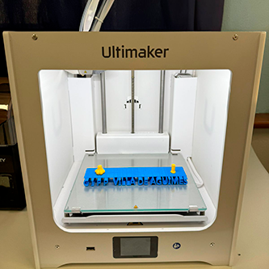

Impresora 3D · Aula ATECA
Ultimaker S3
La impresora de precisión del aula: doble extrusión, perfiles de material listos en Cura y filamento de 2,85 mm.

- Tecnología: FFF con doble extrusión (dos print cores intercambiables).
- Volumen de impresión: 230 × 190 × 200 mm.
- Filamento: 2,85 mm (no sirve el de 1,75 mm de la Artillery).
- Cama: vidrio calefactado con nivelación activa automática.
- Pantalla: táctil a color de 4,7".
- Archivos:
.ufp(o.gcode) por USB, red o Ultimaker Digital Factory.
Es la impresora de precisión del aula: cerrada por delante, muy fiable y con perfiles de material ya ajustados en Cura. Úsala para piezas técnicas, piezas que deban encajar entre sí o impresiones largas que necesiten salir bien a la primera. Para pruebas rápidas y prototipos en PLA, usa la Artillery Genius Pro.
Filamento de 2,85 mm
La Ultimaker S3 usa filamento de 2,85 mm. Una bobina de 1,75 mm (la de la Artillery) no funciona y puede atascar el alimentador. Comprueba el diámetro en la etiqueta de la bobina antes de cargarla.
Antes de empezar
- La placa de vidrio está limpia y bien sujeta por las pinzas delanteras y traseras.
- Hay material de 2,85 mm cargado en el extrusor que vas a usar. Las bobinas Ultimaker con etiqueta NFC se reconocen solas; con otras marcas tendrás que indicar el material en la pantalla.
- Sabes qué print core hay montado en cada ranura (se ve en la pantalla, en Material/Print core): AA para materiales de construcción (PLA, Tough PLA, PETG, ABS…) y BB para soporte soluble (PVA).
- Tienes el modelo en
.stl,.objo.3mf.
1. Preparar en Cura
- En Ultimaker Cura, añade la impresora: Añadir impresora → UltiMaker S3. Si está conectada a la red del aula, aparecerá en Impresoras en red y podrás enviarle los trabajos directamente.
- En la barra superior, indica qué material y qué print core hay en cada extrusor (si la impresora está en red, Cura lo lee solo).
- Arrastra el modelo y elige un perfil predefinido (por ejemplo Normal – 0,15 mm). Los perfiles de Ultimaker ya traen temperaturas, velocidades y retracción ajustadas para cada material: en el aula, cámbialos solo si sabes por qué.
- Si la pieza tiene voladizos complejos y hay PVA en el extrusor 2, activa los soportes con el extrusor 2: el soporte se disuelve después en agua.
- Pulsa Segmentación y revisa la vista previa por capas.
- Envía el trabajo:
- Por red: botón Imprimir a través de la red.
- Por USB: Guardar en disco extraíble (genera un
.ufp, que incluye una miniatura de la pieza).
2. Imprimir
- Enciende la impresora con el interruptor trasero y espera a que arranque.
- Si el trabajo va por USB, conecta la memoria en el puerto frontal, pulsa Imprimir y elige el archivo. Si va por red, aparecerá en la cola: confírmalo en la pantalla o desde Cura.
- La impresora calienta, hace la nivelación activa de la placa (el cabezal palpa la cama) y empieza a imprimir. No hace falta nivelar a mano.
- Cierra la puerta frontal durante la impresión: mantiene estable la temperatura y evita deformaciones (warping), sobre todo con ABS o Tough PLA.
Cambiar el material
Usa siempre el asistente de la pantalla: Material/Print core → Extrusor 1 o 2 → Cambiar. La impresora calienta, descarga el filamento antiguo y te indica cuándo introducir el nuevo en el alimentador trasero hasta que lo "muerda". No tires del filamento a mano con la boquilla fría.
3. Al terminar
- Espera a que la placa de vidrio se enfríe: la mayoría de piezas se despegan solas.
- Si la pieza sigue pegada, abre las pinzas, saca la placa con cuidado y usa la espátula en paralelo al vidrio. No golpees ni fuerces la placa: es vidrio templado, pero se puede romper.
- Si se usó pegamento en barra, lava la placa con agua templada, sécala bien y vuelve a colocarla con las pinzas.
- Confirma en la pantalla que has retirado la pieza (Confirmar retirada) para que la impresora quede lista para el siguiente trabajo.
- Si había soporte de PVA, sumerge la pieza en agua templada (cambia el agua cada pocas horas) hasta que el soporte desaparezca.
Problemas habituales
| Síntoma | Causa probable | Solución |
|---|---|---|
| La impresora pide confirmar el material | Bobina sin etiqueta NFC | Selecciona en la pantalla el material y el diámetro correctos |
| "Material no compatible con el print core" | Combinación no permitida (por ejemplo PVA en AA) | Cambia el print core o el material desde Material/Print core |
| Las piezas de dos colores no coinciden | Offset XY sin calibrar tras cambiar un print core | Mantenimiento → Print core → Calibración de offset XY |
| La pieza se despega o se curva | Placa sucia o puerta abierta | Limpia la placa, aplica una capa fina de pegamento en barra y cierra la puerta |
| Aviso de falta de flujo | Fin de bobina o filamento enredado | Revisa la bobina trasera y carga material nuevo con el asistente |
Mantenimiento
- Cada sesión: placa limpia y sin restos de pegamento; cabezal sin hilos de plástico.
- Cada mes: ejecutar desde la pantalla la limpieza del print core (cold pull guiado) si se ha impreso mucho o se ha cambiado de material a menudo.
- Cada trimestre: lubricar los ejes y husillos con la grasa incluida, siguiendo el asistente de Mantenimiento de la pantalla.
- Mantén el firmware actualizado (Preferencias → Mantenimiento → Actualizar firmware, con la impresora conectada a internet).
Recursos
- 🧩 Ultimaker Cura — laminador oficial con perfiles para la S3.
- 📖 Centro de soporte de UltiMaker — manuales, vídeos de mantenimiento y guías de materiales.
- 🛠️ Flujo completo de diseño y fabricación 3D — del diseño a la pieza terminada.